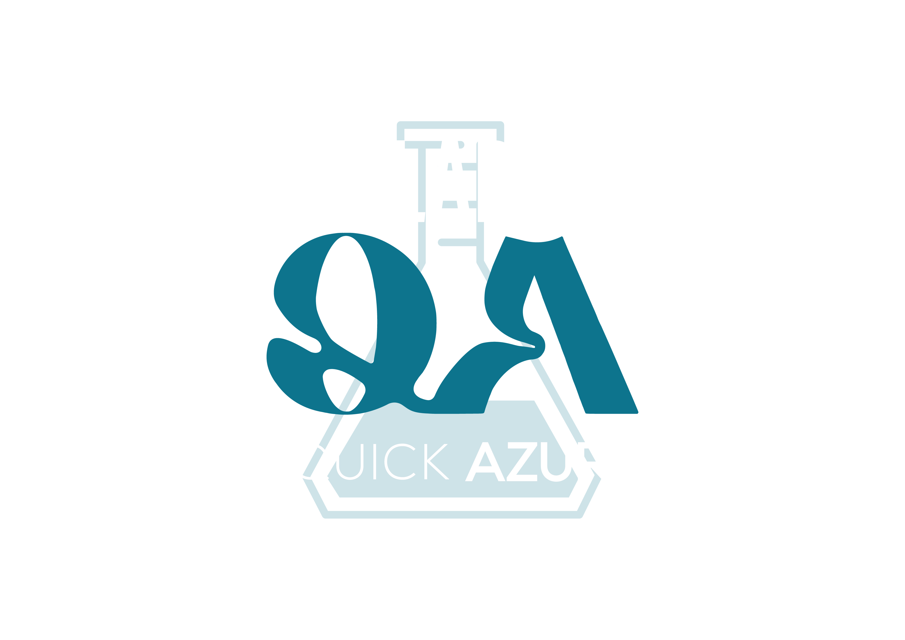

<ion-app>
  <ion-split-pane contentId="main-content">
    <ion-menu type="overlay" menuId="menu1" contentId="main-content" >
      <ion-content >
        <ion-list id="inbox-list" style="padding-top: 100px;">
        
          
 
          <ion-menu-toggle auto-hide="false" id="menu1" *ngFor="let p of appClient; let i = index" >
            <ion-item routerDirection="root" [routerLink]="[p.url]" lines="none" detail="false" routerLinkActive="selected" color="primary">
              <ion-icon slot="start" [ios]="p.icon + '-outline'" [md]="p.icon + '-sharp'"></ion-icon>
              <ion-label>{{ p.title }}</ion-label>
            </ion-item>
          </ion-menu-toggle>
        </ion-list>

        <ion-list id="labels-list">
            <ion-item lines="full"  (click)="logout()" color="primary">
              <ion-icon slot="start" name="log-out"></ion-icon>
              <ion-label>
               Déconnexion
              </ion-label>
            </ion-item>
        </ion-list>
      </ion-content>
    </ion-menu>


    <ion-router-outlet id="main-content"></ion-router-outlet>

  </ion-split-pane>

  
</ion-app>